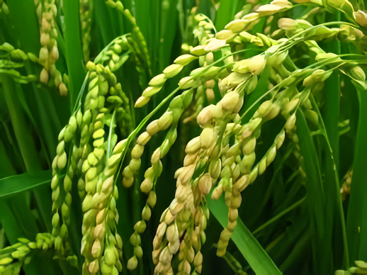

Pusaka Tradisional Jawa dengan Kualitas Nasi Legendaris

Klaten, Jawa Tengah
Sangat Pulen
Bulat Besar
Konsumsi Keluarga Premium
Padi Rojolele merupakan varietas padi lokal unggulan yang sangat melegenda, khususnya berasal dari daerah Klaten, Jawa Tengah. Varietas tradisional ini sangat terkenal di seluruh penjuru Indonesia karena menghasilkan beras berkualitas tinggi dengan karakteristik fisik bulir yang cenderung bulat besar dan gendut. Nasi yang dihasilkan dari beras Rojolele memiliki tekstur yang sangat pulen, lembut, serta mengeluarkan aroma harum yang khas alami saat dimasak, menjadikannya salah satu simbol kemewahan pangan tradisional di pulau Jawa.
Keunggulan mutlak Rojolele terletak pada kualitas sensorik nasinya yang superior dan citarasa tradisional yang sangat kuat. Di pasar komersial, beras Rojolele memiliki nilai ekonomis yang sangat tinggi dan stabil karena selalu diburu oleh konsumen kelas premium. Citarasanya yang gurih alami membuatnya tetap lezat dikonsumsi meskipun tanpa lauk pauk yang berlebih.
Masa pertumbuhan varietas lokal asli ini relatif cukup panjang, berkisar antara 140 hingga 145 hari. Selain itu, postur batang tanaman Rojolele cenderung tumbuh tinggi, sehingga menuntut petani untuk sangat cermat dalam manajemen pemupukan nitrogen dan pengairan agar tanaman tidak mudah rebah (roboh) diterpa angin kencang menjelang masa panen.
Alur waktu fase pertumbuhan padi tradisional Rojolele menuju masa panen optimal.
| Estimasi Biaya Produksi (Budidaya Tradisional Intensif) | Rp 9.000.000 |
| Estimasi Hasil (5.0 Ton Beras Kualitas Premium) | Rp 35.000.000 |
| Estimasi Margin Kotor | Rp 26.000.000 |
Pilih varietas di sisi kanan untuk membandingkan metrik agronomi dengan Rojolele.